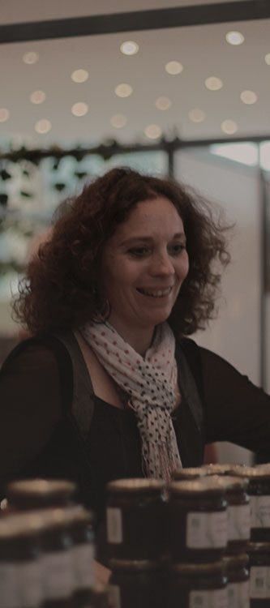

Blandine Maire
Depuis 2009, Blandine et Thierry se sont investis dans la production et la cueillette de fruits, plantes et fleurs sauvages aux Hauts de Salm. Ils les transforment de façon artisanale et les proposent également à la vente en frais, en saison.
Le Jardin des Hauts de Salm est situé au Puid, petite commune des Vosges proche de Senones. Il s’étend sur 2 hectares et compte 1800 pieds de petits fruits dont l’exploitation est certifiée Bio dans sa totalité depuis 2012. Idéalement situé à flanc de montagne, les jardins sont bien exposés et disposent d’une vue imprenable sur le massif vosgien.
Produits
- Ail des ours
- Bluet
- Brimbelle
- Casseille
- Coing
- Églantine
- Fraise
- Framboise
- Groseille
- Mûre
- Pissenlit
- Pomme
- Prunelle
- Rhubarbe
- Sureau
39 le Haut du Village
88210 Le Puid
Tél : 03 29 63 32 10
Mail : contact@salm-confitures-bio.fr
Site : www.salm-confitures-bio.fr